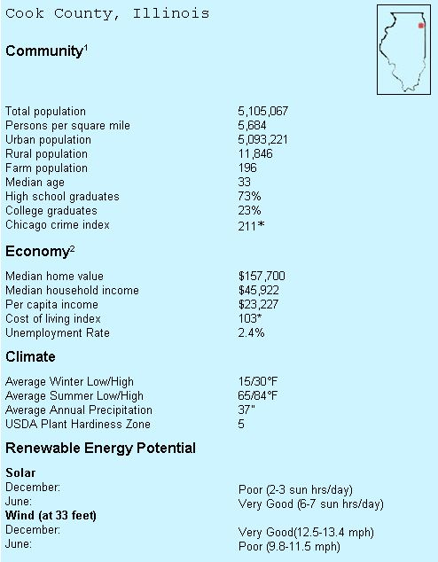
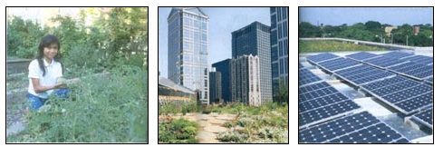

Greener Pastures: Chicago, Illinois
By John Ivanko and Lisa Kivirist
February/March 2003
by John Ivanko and Lisa Kivirist
With one of the most progressive renewable energy rebate programs in the country, Chicago is becoming a city of solar panels and skyscrapers. Scarred brownfields and littered lots are undergoing verdant transformations, providing healing space for humans and habitat for wildlife. Community gardens overflow with fresh fruit and vegetables for nearby residents, and an ever-growing web of bike paths connects neighborhoods, business districts and parks.
As a result, owning a vehicle in Chicago is unnecessary. Getting around the city is best accomplished with the reliable and accessible public transportation system, which includes numerous bus routes and elevated train connections (known as the "El"). More than 1.5 million Chicagoans use public transportation offered by the Chicago Transit Authority each day, and a growing network of bike trails and commuter routes link the surrounding communities.


The Chicago River and its tributaries meander through the city and its ethnically diverse districts. This patchwork of more than 200 neighborhoods and confluence of cultures offers diverse dining, thriving art and theater scenes, and street festivals. One of our favorite neighborhoods is Lincoln Square on the northwest side, originally settled by German immigrants.
Over the years, like many of Chicago's communities, Lincoln Square has merged its Old World heritage with contemporary culture. A hip Italian cafe, Bistro Campagna, featuring a menu of organic and locally grown ingredients, lies just down the street from the Brauhaus, which, even after a quarter of a century, still serves up its Wiener schnitzel with live accordion music. The Merz Apothecary, a European pharmacy that has always focused on herbal medicine, is experiencing a renaissance with those seeking complementary health care. The artistic flair of Lincoln Square remains strong with the addition of the Old Town School of Folk Music, where you can hear great performers in a cabaretlike setting or dabble in ukulele and clawhammer banjo lessons. A yoga studio and massage spa also occupy space along the landscaped streets.
The city and its many communities are returning to their green roots and honoring the city's 165-year-old motto, "City in a Garden," by adding thousands of trees and native perennials to the landscape, restoring 28 miles of boulevard gardens, and creating pocketparks in empty lots and abandoned gas stations. The city has embarked on ambitious plans to re-create open space, wildlife habitat and green corridors, building upon an existing 7,300 acres of parklands within its bounds.
Mayor Richard M. Daley has spearheaded numerous green building projects, sustainable design initiatives, and recycling and water-quality management programs. Chicago has aggressive plans to generate 20 percent of its electrical power from renewable energy sources within five years. Its energy efficiency retrofits of existing public buildings utilize the U.S. Green Building Council's Leadership in Energy and Environmental Design Green Building Rating System. As part of the Urban Heat island reduction plan, the Chicago Department of Environment planted a rooftop garden on top of City Hall. The garden's earthen mass decreases the building's energy needs and the plants improve air quality by reducing ozone pollution and smog. One innovative brownfield revitalization project resulted in the Center for Green Design, a building that includes a water catchment system, a 40-kilowatt photovoltaic system and the use of numerous green building materials. Among its tenants is the Chicago Green Corps, an organization that has helped more than 250 communities add gardens and green space.
Chicago's financial rebates and incentives for residential renewable energy systems are among the best in the nation. As much as $6 per installed watt is offered for photovoltaic systems, and up to 50 percent of the installation costs are covered for residential wind generators.
The city is home to collaborative partnerships and community groups for just about any imaginable issue or cause. The Chicago Wilderness coalition, for example, is an unprecedented alliance of more than 140 public and private organizations working together to protect, restore, study and manage the natural ecosystems of the Chicago region for the benefit of the public. We are among the many readers of Chicago's award-winning ConsciousChoice magazine, which focuses on sustainable living and environmental issues. Earth Day in the city is celebrated for an entire month with numerous conferences and programs.
While many smokestack industries and businesses remain in Chicago, companies that reflect a commitment to ecological and social responsibility are taking root. Examples include Shorebank, which offers financial services to underserved communities and eco-enterprises, and Spire Corporation, which manufactures and installs solar-electric systems.
Interest in organic food and gardening has blossomed in recent years. Chicago is home to more than 25 farmer's markets, including the weekly Green City Market. Community supported agriculture (CSA) also is spreading its influence into the city. Angelic Organics, located north of the city in Caledonia, is one of the largest CSAs in the country, with delivery throughout Chicago. Cabrini Greens, located on a housing project property, supplies organic vegetables to Charlie Trotter's, a world-famous gourmet restaurant.
More than 200 community gardens have sprouted up in the city. The "El Coqui" garden in the Humboldt Park neighborhood was named after a small tree frog native to Puerto Rico, the homeland of many of the area's residents. Once a blighted, vacant lot, this space is now a verdant garden that not only provides vegetables and flowers, but also a living classroom for nearby Von Humboldt Elementary School students. It's supported in part by the Urban Greening program of the Openlands Project, which is dedicated to protecting, expanding and enhancing open and green spaces.
Leading by example, Chicago is seeking to become a place where organizations, government and neighborhoods can join together to renew and restore themselves: creatively, cooperatively and ecologically.
Former Chicagoans Lisa Kivirist and John Ivanko now operate Inn Serendipity in Browntown, Wisconsin, a bed-and-breakfast inn where city folk visit when they need to contemplate the countryside.
|
 The garden planted on the roof of Chicago City Hall helps curb urban population and mitigate the heat-island effect (center). Delilah Aguilar shows off her heirloom vegetables in the El Coqui community garden (left). A garden and solar-electric array harvest sunlight atop the Center for Green Design (right). |
|
 |